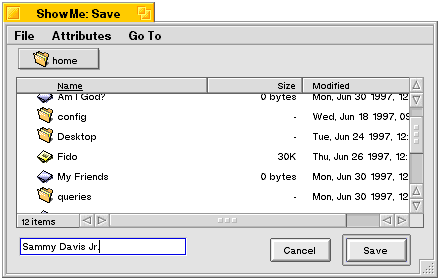
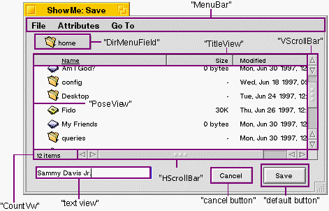

|
This parameter applies to Open panels only.
|
| The Storage Kit Table of Contents | The Storage Kit Index |
Derived from: none
Declared in: be/storage/FilePanel.h
Library: libtracker.so
BFilePanel knows how to create and display an "Open File" or "Save File" panel, and provides the means for filtering and responding to the user's actions on the panel. The Save Panel looks like this:

The Open Panel looks pretty much the same, but without the text view in the lower left corner.
To create and use a BFilePanel, follow these steps:
1. Construct a BFilePanel object in response to the user's request (most likely, a click on an "Open" or "Save"/"Save As" menu item). When you construct the panel, you have to specify its "mode" (Open or Save).
2. Fine-tune the panel by telling it which directory to display, whether it allows multiple selection, whether it can open a directory, which target it should send notifications to, and so on. (Most of these parameters can also be set in the constructor.)
3. Invoke Show() on the panel, and then wait for the user to confirm a selection (or close the panel).
4. Receive a message. When the user confirms a selection (or cancels the panel), the panel disappears and a notification message (Open, Save, or Cancel) is sent to the panel's target. The message identifies the confirmed file(s).
5. Delete the BFilePanel object...or don't. When the user closes a file panel, the object is not automatically deleted; you have to do it yourself. But you may not want to. If you don't delete the panel, you can simply call Show() the next time you want to display it; the state from the previous invocation (the panel's size and location, the directory it points to) is remembered.
The BFilePanel constructor has about two thousand arguments. They all have default values, and most of the parameters that they control can be set through individual functions. The following sections list and describe the constructor arguments and tell you if there's an analogous function.
| Argument | Default | Function |
|---|---|---|
| file_panel_mode mode | B_OPEN_PANEL | none |
There are two file panel modes: B_OPEN_PANEL and B_SAVE_PANEL. You've got to make up your mind in the constructor.
| Argument | Default | Function |
|---|---|---|
| BMessenger *target | be_app_messenger | SetTarget() |
The target represents the BLooper/BHandler that will receive the Open, Save, and Cancel messages.
| Argument | Default | Function |
|---|---|---|
| entry_ref *panel_directory | cwd | SetPanelDirectory() |
When a panel is first displayed, it has to show the contents of some directory; this is called the "panel directory." The panel directory defaults to the current working directory.
| Argument | Default | Function |
|---|---|---|
| uint32 node_flavors | B_FILE_NODE | none |
|
There are three node flavors: B_FILE_NODE, B_DIRECTORY_NODE, and B_SYMLINK_NODE. You combine these constants to declare the flavors that you want the user to be able to confirm. Before describing the flavor settings, keep this in mind...
If you understand the following, you can save yourself some reading:
If you're not convinced, read on:
As implied by the here, when the user confirms a symlink (regardless of the flavor setting), you always receive the symlink itself in the Open message—you don't get the file or directory it points to.
Argument
Default
Function
bool allow_multiple_selection
true
none
This parameter determines whether the user is allowed to select more than one item at a time. Save panels should set this to false.
Argument
Default
Function
BMessage *message
a default BMessage
SetMessage()
By default, the format of the message that's sent to your target when the user confirms or cancels is defined by the file panel (the default formats are defined later). You can override the default by specifying your own BMessage. The BMessage is copied by the BFilePanel object. You can change this message using the SetMessage() function.
Argument
Default
Function
BRefFilter *filter
NULL
SetRefFilter()
When panel directory changes (this includes when the panel is constructed, and when the panel's Refresh() function is called), or when a new entry is added to the existing directory, the new entries are passed, one-by-one, to the panel's BRefFilter object through a BRefFilter hook function. In your implementation of the hook function, you can reject individual entries; rejected entries won't be displayed in the file list.
By default, a file panel has no BRefFilter. To supply one, you have to subclass BRefFilter (in order to implement the hook function) and pass it in.
Argument
Default
Function
bool modal
false
none
A modal file panel can't be closed; to get rid of the panel, the user has to click a button. By default, file panels are not modal.
Argument
Default
Function
bool hide_when_done
true
SetHideWhenDone()
By default, a file panel is hidden when the user confirms or Cancels. If you set hide_when_done to false, the panel remains on the screen. Clicking the panel's close box always hides the panel
When the user confirms a selection or cancels a file panel, a BMessage is constructed and sent to the target of the BFilePanel object. By default, the target is be_app_messenger. You can specify a different target (as a BMessenger) through the BFilePanel constructor, or through the SetTarget() function.
The format of the BMessage that the target receives depends on whether the user is opening, saving, or canceling.
If the target is be_app_messenger and the what field is B_REFS_RECEIVED, the BMessage shows up in the RefsReceived() function. Otherwise it's sent to the target's MessageReceived().
Keep in mind that the refs that you receive through this message point to the literal entries that the user confirmed. In other words, if the confirmed selection is a symlink to a file, you'll receive a ref for the symlink, not the file (and similarly for a link to a directory). It's up to you to turn the symlink into a file (which is probably what you want).
If you want a BEntry object, all you have to do is pass true as the traverse argument to BEntry's constructor or SetTo():
/* We>ll assume that 'ref' was just plucked from an open notification. */ BEntry entry(ref, true);
You don't even have to check to see if the ref is a symlink.
If you want to turn a symlink ref into a ref to the pointed-to file, just add this line:
entry.GetRef(&ref);
Save notifications are always sent to the target's MessageReceived() function.
Note that if the user confirms a name that collides with an existing file, an alert is automatically displayed. The user can then back out of the confirmation and return to the Save Panel, or clobber the existing file. The save notification is sent after (and only if) the user agrees to clobber the file.
|
A cancel notification is sent whenever the file panel is hidden. This includes the Cancel button being clicked, the panel being closed, and the panel being hidden after an open or a save (given that the panel is in hide-when-done mode).
Cancel notifications are always sent to the target's MessageReceived() function.
Keep in mind that when a file panel is closed—regardless of how it's closed—the BFilePanel object is not destroyed. It's merely hidden.
There are two ways you can modify the look of your BFilePanel object.
The views in the panel are (mostly) named, as listed and shown below

The background view doesn't have a name, but it's always the first in the window's list of views:
BView *background = filepanel->Window()->ChildAt(0);
The other views can be found by name, reckoning off of the background view. For example, here we get the "PoseView" view (the view that contains the file list):
BView *files = background->FindView("PoseView");
You can also display Open and Save Panels through the global C functions run_open_panel() and run_save_panel() (which are declared in FilePanel.h). The functions create BFilePanel objects using the default constructor settings (modulo the file_panel_mode, of course).
The C functions create a new file panel each time they're called, and delete the panel when the user is finished with it.
SelectionChanged()
Invoked whenever the user changes the set of selected entries.
WasHidden()
Invoked just after the file panel is hidden because of the user's actions (it's not invoked if you call Hide() yourself).
|
The constructor creates a new BFilePanel object and initializes it according to the arguments. The panel isn't displayed until you invoke Show(). The arguments are thoroughly described in "Constructing and Fine-tuning the Panel."
|
|
Destroys the BFilePanel. The object's target and BRefFilter are not touched by this destruction. If the object is currently displaying a file panel, the panel is closed.
|
GetNextSelectedRef() initializes its arguments to point to the "next" ref in the file panel's set of currently selected items. The function returns B_ENTRY_NOT_FOUND when it reaches the end of the list. Rewind() gets you back to the top of the list.
Although you can call these functions anytime you want, they're intended to be used in implementations of the SelectionChanged() hook function.
|
Returns the object's mode, either B_OPEN_PANEL or B_SAVE_PANEL. The mode is set in the constructor and can't be changed thereafter.
|
Refresh() tells the file panel to re-read the contents of the panel directory, which causes the directory's entries to be re-run through the ref filter.
You don't have to call Refresh() in order to keep the panel in sync with the directory's contents—the directory and file panel are kept in sync automatically.
|
This hook function is invoked whenever the user changes the set of selected files. Within your implementation of this function, you iterate over GetNextSelectedRef() to retrieve refs to the currently selected files.
|
Sends BMessage message to the BHandler targeted by messenger.
See also: BMessenger::SendMessage()
|
SetButtonLabel() lets you set the label that's displayed in the panel's buttons. The button that a specific invocation affects depends on the value of which_button:
SetSaveText() sets the text that's displayed in the Save Panel's text view (the area in which the user types and confirms a file name).
|
By default, a file panel is hidden when the user confirms or Cancels. You can control this behavior using the SetHideWhenDone() function. If you set hide_when_done to false, the panel remains on the screen; if you specify true, the panel hides when the user confirms or Cancels. Clicking the panel's close box always hides the panel.
HidesWhenDone() returns the current setting of this option: true if the panel hides when the user is done with it or false if it remains on the screen.
|
SetMessage() allows you to set the format of the file panel's notification messages. The message can also be set through the constructor. See "The Target and the Messages it Sees" for more information.
A copy is made of the BMessage, so it is your responsibility to delete msg when you no longer need it.
|
The SetPanelDirectory() function sets the panel's "panel directory." This is the directory whose contents are displayed in the panel's file list. You can also set the panel directory through the constructor. If you don't supply a directory, the current working directory is used.
GetPanelDirectory() initializes ref to point to the current panel directory. The argument must be allocated.
|
Whenever the file panel's panel directory is changed or refreshed (Refresh()), or when a new entry is added to the current panel directory, the "new" entries are run through the panel's "ref filter." The BRefFilter class defines a single boolean hook function called Filter(). The function receives the entries, one-by-one, and can reject specific entries (because they're the wrong file type, for example). Rejected entries are not shown in the panel's file list.
The SetRefFilter() function sets the panel's ref filter. You can also set it through the constructor. Ownership of the filter is not handed to the panel. You mustn't delete the ref filter while the panel is still extant.
RefFilter() returns a pointer to the panel's ref filter.
|
SetTarget() sets the target of the file panel's notification messages. The target can also be set through the constructor. If you don't set a target, be_app_messenger is used. See the BInvoker class (in the Application Kit) for an explanation of how a BMessenger can be used as a target.
A copy is made of the BMessenger, so it is your responsibility to delete bellhop when you no longer need it.
Messenger() returns (a copy of) the messenger that's used as the file panel's target.
|
These functions show and hide the file panel, and tell if you the panel is currently showing.
WasHidden() is a hook function that's invoked whenever the user's actions causes the file panel to be hidden. If you call Hide() yourself, WasHidden() is not invoked.
|
Returns a pointer to the file panel's window. If you want to mess around with the window's views, see "Modifying the Look of the File Panel."
| The Storage Kit Table of Contents | The Storage Kit Index |
Copyright © 2000 Be, Inc. All rights reserved..